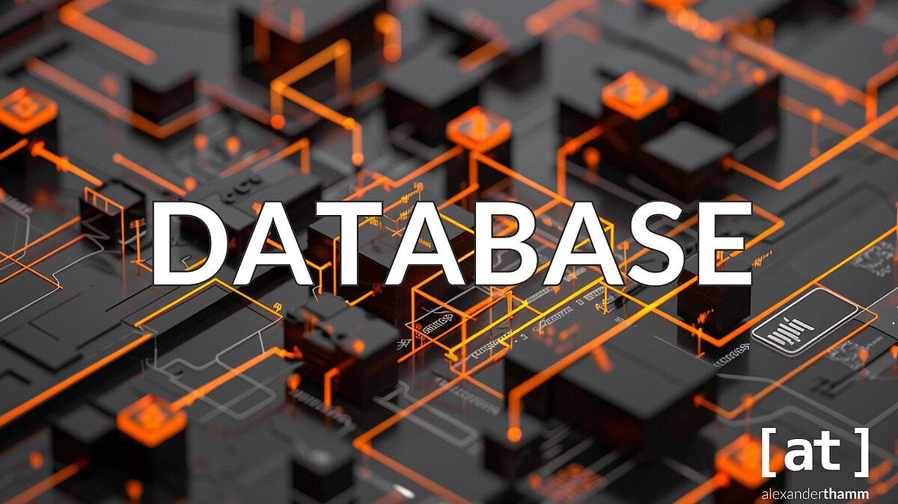

Datenbanken
Das Bild zeigt eine abstrakte, digitale Darstellung einer Datenbank mit vernetzten, dunklen 3D-Strukturen und leuchtend orangenen Linien. Es symbolisiert die Speicherung, Verarbeitung und Vernetzung von Daten in modernen IT-Systemen.
Grundlagen Datenbanken
Einleitung
Datenbanken sind ein zentraler Bestandteil moderner Informationssysteme und aus der heutigen IT-Welt nicht mehr wegzudenken. Sie dienen dazu, grosse Mengen an Daten strukturiert zu speichern, effizient zu verwalten und gezielt abzurufen. Ob in Unternehmen, Online-Plattformen, Apps oder Verwaltungssystemen – überall werden Datenbanken eingesetzt, um Informationen sicher, konsistent und dauerhaft verfügbar zu machen.
Was ist eine Datenbank?
Eine Datenbank ist eine organisierte Sammlung von Daten, die elektronisch gespeichert wird. Sie ermöglicht es, Daten zu erfassen, zu verändern, zu löschen und abzufragen. Im Gegensatz zu einfachen Dateien wie Excel-Tabellen oder Textdateien bieten Datenbanken eine höhere Datenintegrität, Mehrbenutzerfähigkeit und bessere Zugriffskontrolle. Gesteuert werden Datenbanken über ein Datenbankmanagementsystem (DBMS), zum Beispiel MySQL, PostgreSQL oder Oracle.
Relationale Datenbanken
Die am häufigsten verwendete Datenbankform ist die relationale Datenbank. Hier werden Daten in Tabellen gespeichert, die aus Zeilen (Datensätzen) und Spalten (Attributen) bestehen. Jede Tabelle beschreibt eine Entität, zum Beispiel Kunden, Produkte oder Bestellungen. Jede Entität besitzt einen Primärschlüssel, der jeden Datensatz eindeutig identifiziert. Beziehungen zwischen Tabellen werden über Fremdschlüssel hergestellt, wodurch Redundanzen vermieden und Daten logisch verknüpft werden können.
Normalisierung
Ein wichtiges Grundkonzept von Datenbanken ist die Normalisierung. Sie beschreibt den Prozess, Daten so zu strukturieren, dass Redundanzen vermieden und Inkonsistenzen verhindert werden. Ziel ist es, die Daten mindestens in die dritte Normalform (3NF) zu überführen. Dabei werden Daten logisch auf mehrere Tabellen verteilt, sodass jedes Attribut eindeutig von seinem Primärschlüssel abhängt. Eine gut normalisierte Datenbank verbessert die Wartbarkeit, Datenqualität und Performance.
SQL – Structured Query Language
SQL ist die standardisierte Sprache zur Arbeit mit relationalen Datenbanken. Mit SQL können Daten abgefragt (SELECT), eingefügt (INSERT), geändert (UPDATE) und gelöscht (DELETE) werden. Zusätzlich ermöglicht SQL die Definition von Tabellenstrukturen, Schlüsseln, Beziehungen und Zugriffsrechten. SQL ist daher ein zentrales Werkzeug für Datenbankadministratoren und Entwickler.
Datenintegrität und Sicherheit
Datenbanken stellen Mechanismen zur Sicherstellung der Datenintegrität bereit. Dazu gehören Constraints wie NOT NULL, UNIQUE oder FOREIGN KEY. Diese Regeln verhindern ungültige oder widersprüchliche Daten. Zusätzlich spielen Sicherheitsaspekte eine wichtige Rolle, zum Beispiel Benutzerrechte, Rollen, Verschlüsselung und Backups. Dadurch wird sichergestellt, dass nur berechtigte Personen Zugriff auf sensible Daten erhalten.
Einsatzgebiete von Datenbanken
Datenbanken werden in nahezu allen Bereichen eingesetzt: Kundenverwaltung, Buchhaltung, Onlineshops, soziale Netzwerke, medizinische Systeme oder Logistik. Durch ihre Skalierbarkeit und Zuverlässigkeit bilden sie das Rückgrat moderner Anwendungen und Geschäftsprozesse.
Fazit
Mir hat es sehr gefallen in das Thema Datenbanken zu starten. Ich fand es sehr spannend und ich habe vieles neues gelernt, ich fand es sehr interessant, vorallem alleine Datenbanken erstellen. Ich freue mich sehr auf den UeK kommende Woche.